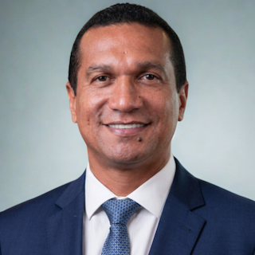

Directorio institucional
Consulta los cargos, contactos institucionales y actos de designación del equipo de Altum Lumen.
-
 Ver ficha
Ver fichaGerencia General
Jeanfranco Martín Vargas Luque
Gerente General
-
Ver ficha
Secretaría General
Piero Alessandro Vargas Luque
Secretario General (DT)
-
Ver ficha
Oficina de Trámite Documentario y Atención al Cliente
Víctor Manuel Vásquez Cobos
Jefe de la Oficina de Trámite Documentario y Atención al Cliente
-
 Ver ficha
Ver fichaDirección de Administración
Martín Ricardo Vargas Castañeda
Director de Administración
-
Ver ficha
Subdirección de Recursos Humanos
Walter Gerson Angulo Zavaleta
Subdirector de Recursos Humanos
-
 Ver ficha
Ver fichaOficina de Prevención de Riesgos, Seguridad y Continuidad Operativa
María Cecilia Luque Medina
Jefa de la Oficina de Prevención de Riesgos, Seguridad y Continuidad Operativa (DT)
-
Ver ficha
Oficina Corporativa de Asesoría Jurídica
Óscar Felipe Moreno Tupia
Jefe de la Oficina Corporativa de Asesoría Jurídica (DT)
-
 Ver ficha
Ver fichaSubgerencia de Planeamiento, Desarrollo Corporativo y de Servicios
Gerardo Martín Guerrero García
Subgerente de Planeamiento, Desarrollo Corporativo y de Servicios
-

Ver fichaDirección de Proyectos e Inversiones
Segundo Raymundo Tabachi Vega
Director de Proyectos E Inversiones
Prueba otro término o limpia los filtros.
Junta General de Accionistas
Órgano supremo de dirección societaria de Altum Lumen S.A.C.
- Constitución
- Acreditación registral
- Partida Registral N.° 15949500
Últimas actualizaciones del directorio
Piero Alessandro Vargas Luque asume temporalmente la Gerencia de Servicios Comerciales y Cooperación y la Secretaría General, en adición a sus funciones; concluyen las designaciones anteriores en ambos puestos.
Resolución de Gerencia General N.° 00025-2026-AL/GGVíctor Manuel Vásquez Cobos asume la Oficina de Trámite Documentario y Atención al Cliente; concluye la asignación temporal de Óscar Felipe Moreno Tupia.
Resolución Subdirectoral N.° 00015-2026-AL/SDRHPiero Alessandro Vargas Luque asume la Oficina de Imagen Institucional e Informática; concluye la asignación temporal anterior.
Resolución Subdirectoral N.° 00013-2026-AL/SDRHÓscar Felipe Moreno Tupia queda designado como Director Académico y Jeanfranco Martín Vargas Luque asume temporalmente la Subdirección de Servicios Legales.
Resolución de Gerencia General N.° 00018-2026-AL/GG